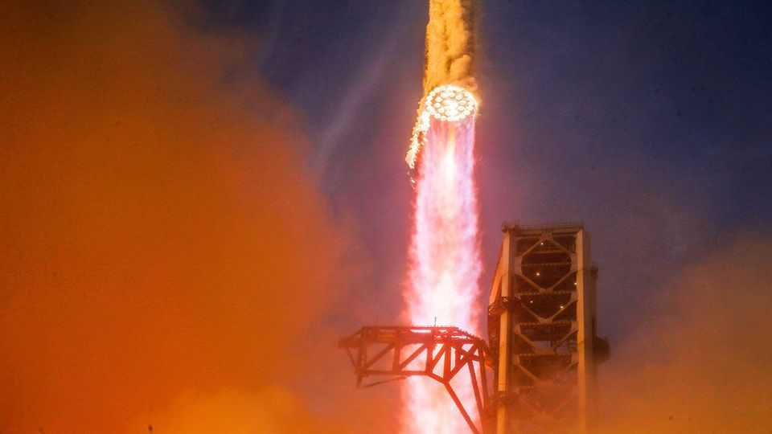
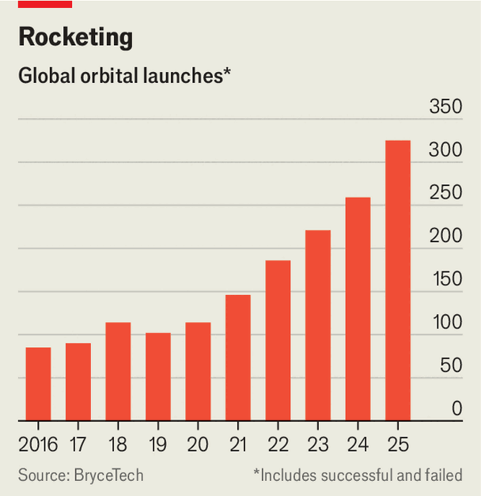

A rocket shortage gives SpaceX’s competitors an opportunity
The firm may soon have little capacity to launch others’ payloads

Oct 1st 2026
LAST YEAR was the busiest ever in the rocket business. BryceTech, a firm of analysts and engineers, counted 325 orbital launches, 25% more than in 2024. They deployed 4,544 spacecraft, a 54% rise. And 2024 was itself a record-breaking year—as was each of the three previous years (see chart).
Yet amid this unprecedented abundance, the space industry is gripped by worries of a rocket shortage. “I think ‘panic’ is the operative word here,” says Caleb Henry, director of research at Quilty Space, another firm of analysts. The looming shortage was the “number one theme” at World Space Business Week, a conference in Paris in mid-September, he adds.

The cause of the panic is SpaceX. Elon Musk’s firm is the industry’s dominant force, and its cheap, reliable Falcon 9 is its workhorse. In 2025 SpaceX flew 43 launches for outside customers, carrying hundreds of satellites either on dedicated flights or on “rideshare” missions in which several clients share a rocket. Rocket Lab, a New Zealand-American company that is SpaceX’s closest competitor in commercial launches, flew 18 times—but its diminutive Electron rocket has less than 2% of the payload capacity of the Falcon 9.
Despite the Falcon 9’s dominance, its days are numbered. SpaceX is keen to switch to Starship, a new, much bigger and fully reusable rocket now in development. Recently Gwynne Shotwell, SpaceX’s chief operating officer, said that the firm was keen to “obsolete [sic] our own products” before its competitors can. Exactly when the Falcon 9 will stop flying is unknown. But on September 28th a Starship test flight put SpaceX’s Starlink broadband satellites into orbit for the first time. And 2026 looks set to be the first year in which the number of Falcon 9 flights falls rather than rises. The word on the street, says Simon Potter of BryceTech, is that it is impossible to buy a Falcon 9 launch after 2028.
For many years satellite-builders had assumed that SpaceX would offer Starship launches to its customers in the same way as with the Falcon 9. That now looks less certain. The firm is vertically integrated, building and flying Starlink satellites, of which more than 11,000 are active in orbit. Starship is vital to Starlink’s growth—and to flying the many thousands of “Starmind” data-centre satellites that SpaceX plans for its artificial-intelligence business. Those demands may leave no Starships free for other work, at least for a while. Crunch the numbers and it is not clear where other customers would fit in, says Mr Potter. And SpaceX would not be giving up much. Its launch business accounted for just 8% of its $12.5bn revenue in the six months to June 30th, with the rest coming from Starlink and the AI business.
The prospect that SpaceX may in future keep its rockets to itself has caused dismay among satellite operators—but excitement among the firm’s rivals. On an earnings call on September 10th Giulio Ranzo, the boss of Avio, an Italian company that makes the Vega-C, a smallish rocket, said: “We have a whole bunch of customers coming to us and saying, ‘Oh my God, can you fly us? Because SpaceX no longer gives us a chance to launch’.”
The Falcon 9’s retirement would also mean the end of SpaceX’s Dragon spacecraft. That would leave Boeing as the only company able to fly astronauts to the International Space Station, on its troubled, lossmaking Starliner capsule. On September 28th NASA said that it had bought two new flights from Boeing, adding that it will pay the firm extra to help it fix Starliner’s manoeuvring thrusters, which have caused problems on previous flights.
Plenty of smaller, hungrier companies will be hoping to take advantage, too. The first flight of Rocket Lab’s Neutron rocket, which has over half the capacity of the Falcon 9, is due later this year or early next. Relativity Space, a startup now bankrolled by Eric Schmidt, an ex-boss of Google, is working on the Terran R, a Falcon-9-sized rocket of its own. Blue Origin, owned by Jeff Bezos, may also be a contender, though it suffered a serious setback in May when a rocket explosion destroyed its only launchpad. Mr Henry points to Firefly Aerospace, an American firm, and Isar Aerospace, a European one that reached orbit for the first time on September 5th, as other commonly mentioned names.
SpaceX has years of experience and hundreds of flights under its belt, while all the new contenders are unproven. But Mr Potter notes that in the past few months, perhaps in anticipation of the fight to come, rocket firms’ pitch decks have emphasised manufacturing prowess and scalability as much as the rockets’ technical attributes. If the 800-pound gorilla does quit the market, it will leave plenty of juicy spoils for others to scrap over. ■